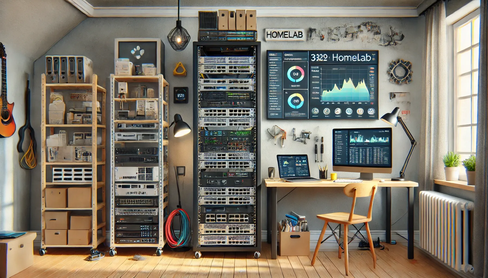

Currently working on Homelab
I am currently in the process of creating a home lab to deepen my knowledge and gain hands-on experience in various aspects of IT. This self-managed environment allows me to explore and experiment with technologies such as virtualization, networking, and system administration in a controlled and secure setting.By setting up and maintaining a home lab, I aim to enhance my technical skills in areas like server deployment, network configuration, and cybersecurity. This project is also an opportunity to simulate real-world scenarios, troubleshoo